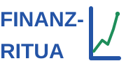

Nur ein erster Entwurf — kein fertiges Logo, sondern eine Idee zum Anschauen und Diskutieren. Variante 1 und 2 bestehen aus den gleichen Kästchen, unterscheiden sich aber in der Farbgebung; Variante 3 ist ein ganz anderer, nachträglich ergänzter Ansatz.
Variante 1 — klassisch, dunkle Kästchen
Variante 2 — durchgehend Systemblau
Variante 3a — erster Versuch, L-Marke umfasst nur die zweite Zeile

Variante 3b — korrigiert, das L umspannt die volle Höhe beider Zeilen
Variante 3c — engerer Abstand, Bindestrich berührt das L, keine Streckung
Was sich in 3c geändert hat
- Zeilenabstand verkleinert: der Abstand zwischen „FINANZ-" und „RITUA" wurde deutlich kleiner — der Block liest sich jetzt als eine kompakte Einheit statt als zwei locker verbundene Zeilen.
- Bindestrich berührt das L: beide Zeilen sind jetzt exakt auf dieselbe x-Position wie der senkrechte Strich rechtsbündig ausgerichtet, sodass der Bindestrich am Ende von „FINANZ-" bündig daran anliegt.
- Keine Streckung mehr: „RITUA" nutzt keine erzwungene textLength mehr — stattdessen rechtsbündige Ausrichtung (text-anchor="end") bei natürlicher Zeichenbreite, sodass die Buchstaben ihre normalen Proportionen behalten.
Wie Variante 3b gedacht ist
- Das L klammert jetzt den ganzen Block: Der senkrechte Strich beginnt oben auf Höhe von „FINANZ-", läuft die volle Höhe beider Zeilen hinunter und knickt erst unten, auf Höhe von „RITUA", nach rechts ab — dadurch wirkt das L wie eine Klammer um beide Zeilen, nicht wie ein Anhängsel an einer einzelnen Zeile.
- Grüne Wachstumslinie mitgestreckt: der Akzentstrich läuft jetzt fast über die volle Höhe des L, endet aber weiterhin im selben Punkt-Marker oben — liest sich als Wachstum über das ganze Wort hinweg, nicht als kleine Verzierung am Ende.
- Weiterhin ein früher Entwurf: die genauen Proportionen (wie hoch, wie weit der Fuß nach rechts reicht) sind eine erste Annahme und leicht anzupassen, sobald sie in echter Größe zu sehen sind.
Wie die Idee gedacht ist
- Sechs Kästchen pro Wort: „Finanz" und „Ritual" haben beide genau sechs Buchstaben und passen dadurch exakt in ein gleich breites Kästchenraster.
- Grüner Trennstrich: ein schmaler grüner Strich zwischen den beiden Wörtern hält die Fläche kompakt zusammen und setzt gleichzeitig einen Farbakzent.
- Variante 1 (klassisch): beide Zeilen in Dunkel mit weißer Schrift — reduziert und zeitlos.
- Variante 2 (Systemblau): beide Zeilen komplett in Markenblau — die weiße Schrift bleibt erhalten, der grüne Trennstrich setzt den einzigen Kontrast. Wirkt geschlossener als Variante 1 und trägt die Markenfarbe deutlicher.
- Dateien: <code>logo-crossword.svg</code>, <code>logo-crossword-blue.svg</code> und <code>logo-compact-2line.svg</code> liegen alle im Projektordner und können direkt weiterverwendet werden.
Vergleich zum bestehenden Wortlogo
Das aktuelle Finanzritual-Logo — der Schriftzug „Finanzritua" plus ein kleines blaues L mit grünem Wachstumspfeil — ist auf maximale Flexibilität ausgelegt: Es skaliert von einem 16-Pixel-Favicon bis zum vollen Header, ohne an Lesbarkeit zu verlieren, und funktioniert auf Deutsch wie auf Englisch gleichermaßen, weil der Schriftzug nicht Buchstabe für Buchstabe übersetzt werden muss.
Die Kastenschrift-Idee ist ein ganz anderer Logo-Typ — näher an einem Badge oder Siegel als an einer klassischen Wortmarke. Zwölf Kästchen beanspruchen mehr visuellen Raum als ein schlanker, horizontaler Schriftzug, wodurch sie sich eher für ein quadratisches Format eignet (Social-Avatar, App-Icon, Sticker) als für eine breite Header-Leiste mit begrenztem horizontalem Platz.
Wo welche Variante passen könnte
- Quadratische Formate: das kompakte 2×6-Raster eignet sich von Natur aus für ein Social-Media-Profilbild oder ein App-Icon, wo ein breiter Schriftzug unschön beschnitten oder verkleinert werden müsste.
- Variante 1 vs. Variante 2: die dunkle klassische Version liest sich im Schwarzweißdruck (Newsletter, Rechnungen) etwas besser, während die durchgehend blaue Version die Farbidentität auf Bildschirmen stärker transportiert.
- Grenze: bei sehr kleinen Größen verliert die Version mit zwölf einzelnen Kästchen und Buchstaben in der Lesbarkeit gegen den einfacheren Schriftzug — diese Idee eignet sich am besten ab etwa 60×60 Pixel aufwärts.
Wie bei der Koordinatensystem-Skizze dient auch diese Seite dazu, Feedback zu sammeln, bevor entschieden wird, ob eine der beiden Varianten weiterverfolgt werden soll.